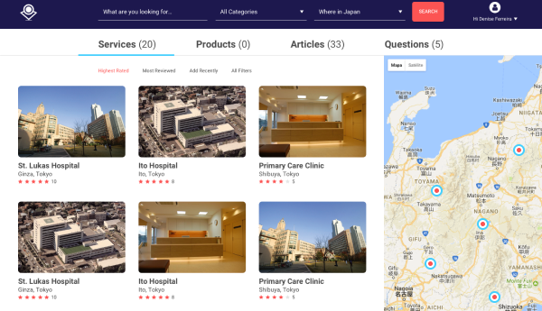

Tasukete is a social networking platform dedicated to helping foreigners who are not fluent in Japanese. It facilitates access to services in foreign languages, fosters knowledge sharing, and provides a space for addressing questions, making life easier for those navigating a new culture.
Many foreigners in Japan face challenges accessing services and information due to language barriers, leading to isolation, frustration, and difficulties in daily life.
The design process for this product follows a user-centered approach, ensuring that the platform meets the needs and pain points of foreigners living in Japan.
The Research phase, conducted after defining the problem and gathering initial user insights, focused on exploring potential solutions to address the identified needs. This included analyzing similar platforms and examining successful features to inspire a user-centered design.
During Feature Prioritization, the team evaluated and selected the most relevant and feasible features. Key functionalities, such as intuitive categorization, geolocation tools, and a user feedback system, were prioritized to ensure the MVP addressed the most critical user challenges.
In the Ideation phase, these findings were translated into clear design concepts. Wireframes were created to map out the platform’s user interface and flow, ensuring a straightforward and user-friendly experience. These wireframes were then transformed into detailed mockups for development. Finally, a Beta version of the platform was launched to gather feedback from users, validating the design and functionality before finalizing the product.
The solution was to create a platform that combines a dynamic community space with a service directory and geolocation tools, offering a seamless user experience.
The interface was designed to display information in an organized, easy-to-navigate format, enabling users to quickly find services and products categorized by type, location, and language accessibility.
The platform's geolocation feature enhances usability by showing relevant services nearby, making the discovery process efficient and tailored to the user’s current needs.
Users engage with the platform through a dynamic feed where they can post questions, share personal experiences, and provide feedback on services, fostering a collaborative and supportive community. This user-generated content ensures a continuous flow of relevant information, making the platform a valuable resource for both newcomers and long-term residents. To boost engagement, the platform includes a gamification system that rewards users for contributing reviews, answering questions, and sharing insights. Users earn reputation scores, which incentivizes participation and helps them gain recognition within the community.
The platform also allows users to save and organize information that is most relevant to them, such as trusted service providers, local tips, or useful resources. This feature provides a personalized experience, making it easy for users to access and manage their favorite content.
By combining collaboration, gamification, and customization, the platform becomes not just a space for interaction, but a highly functional tool for managing daily life and building a sense of community.
Additionally, a review and rating system ensures transparency, helping users make informed decisions based on the quality and language proficiency of the services listed.
This integrated approach ensures that users can both contribute to and benefit from a continuously evolving database of resources, creating a self-sustaining and highly engaging community.
The project successfully developed a user-driven platform to help foreigners navigate daily life in Japan. Combining intuitive service categorization, geolocation tools, and a collaborative review system, the solution offered clarity, usability, and trust.
Challenges included refining the service categorization, creating a self-sustaining business model, and building a scalable brand identity, all of which enhanced the understanding of organizing diverse global information.
Through a functional MVP tested in a private beta with expatriates, the platform's value and usability were validated. My contributions included designing the brand identity and user interface, which were implemented into a functional framework.
Although the project did not progress to organic growth, it demonstrated strong potential and laid a foundation for future expansion.